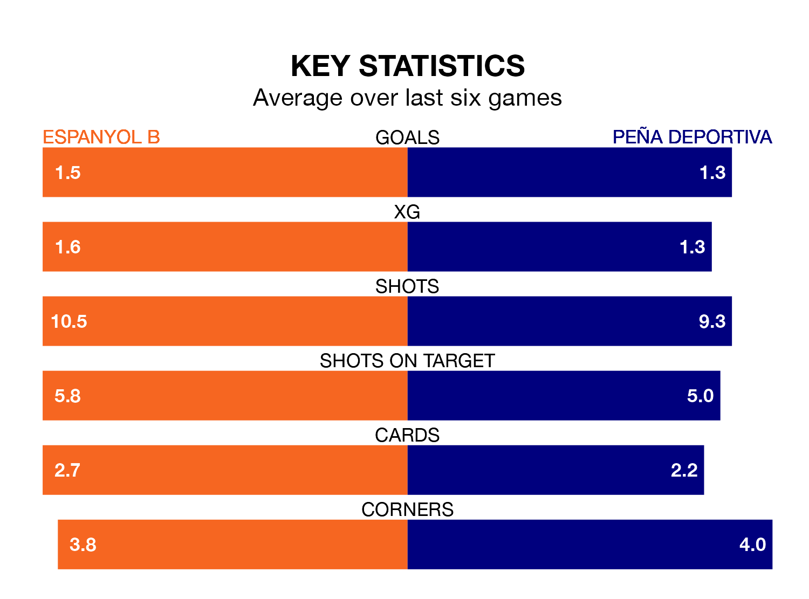

Peña Deportiva make the journey to Ciutat Esportiva Dani Jarque to play Espanyol B on early Sunday looking to pick up points to end their three-game losing streak.
Peña Deportiva's struggles have left them with nine points from their last six Segunda División RFEF Group 3 matches, while their opponents have earned 12 from a possible 18.
With 29 goals in 23 games so far this season, Peña Deportiva are scoring more than average in the league with 1.3 goals per game. But they are conceding more than average too, letting in 39 goals at a rate of 1.7 per game.
Espanyol B, meanwhile, are average scorers, with 1.2 goals per game. They have conceded 1.1 goals per game.
In the last 10 years, Espanyol B and Peña Deportiva have played each other on seven occasions. Espanyol B won three of them, Peña Deportiva two, and they drew twice.
On average, Espanyol B scored 0.9 goals and Peña Deportiva 0.9 in those matches.
Their last meeting was on October 15, when they played out a 1-1 draw.
The home side are seventh in the table after 23 games, of which they have won eight and drawn eight, earning 32 points.
The visitors are four places behind Espanyol B in 11th, with eight wins and six draws putting them on 30 points.
Espanyol B's last match was on February 18, a 1-0 win against Manresa, with Francisco Javier Hernandez Coarasa getting the goal for Espanyol B.
Peña Deportiva lost 3-1 against Lleida Esportiu last time out, also on February 18, with Marc Fraile Rosello on the scoresheet.
Updated: 10:08 (UTC), 23/02/24